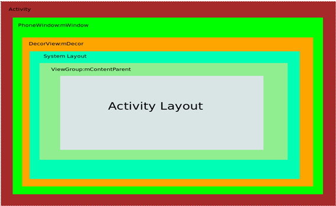

2017 Android 面试题 [ 基础与细节 ]
感谢@chuyao抛出的这些问题，平时业务代码写多了，很多基础的东西变得含糊不清了，这次裸辞出来找工作确实没有之前顺利，顺便求上海Android开发的坑。 我自己整理了些答案，不对或者不妥的地方请大家指出，谢谢。
1. Activity建立在哪些窗口组件之上？顺带涉及View的事件传递问题。
没读懂问题，=。=不知道是不是问Activity的UI结构，如果是可以参考这篇文章。 
对于View的事件传递，则可以从 Activity --> ViewGroup --> ...... --> Activity 的 U型 消费结构去说。
2. 什么情况下，Activity的onNewInstent()方法会执行？Activity的启动模式相关。
当此Activity的实例已经存在，并且此时的启动模式为SingleTask和SingleInstance，另外当这个实例位于栈顶且启动模式为SingleTop时也会触发onNewInstent()。
3. Activity A使用startForResult启动Activity B，B什么都不做并返回A，A中的onActivityResult回调是否会执行？
startActivity()方法，最终都是调用startActivityForResult()方法。默认的requestCode = -1 resultCode = RESULT_CANCELED = 0，当你的requestCode ！= -1时，onActivityResult()一定会被调用。
4. Fragment能否不依赖于Activity存在？简析一下Fragment的栈管理。
Fragment不能独立存在，它必须嵌入到activity中，而且Fragment的生命周期直接受所在的activity的影响。
// Create new fragment and transaction
Fragment newFragment = new ExampleFragment();
FragmentTransaction transaction = getFragmentManager().beginTransaction();
// Replace whatever is in the fragment_container view with this fragment,
// and add the transaction to the back stack
transaction.replace(R.id.fragment_container, newFragment);
transaction.addToBackStack(null);
// Commit the transaction
transaction.commit();
transaction只是记录了从一个状态到另一个状态的变化过程，即比如从FragmentA替换到FragmentB的过程，当通过函数transaction.addToBackStack(null)将这个事务添加到回退栈，则会记录这个事务的状态变化过程，如从FragmentA —>FragmentB,当用户点击手机回退键时，因为transaction的状态变化过程被保存，则可以将事务的状态变化过程还原，即将FragmentB —> FragmentA.
添加到回退栈的函数：transaction.addToBackStack(null);
参考文章： http://blog.csdn.net/u011026329/article/details/47903177
5. 能否将一个Activity放到系统的最近任务列表里，独立于宿主app任务卡之外？
我印象中是可以做到了，平时没用到，知道的同学请@我，谢谢！
6. 对于同一个Service，在被start启动之后还能不能被bind？
能
服务基本上分为两种形式： 启动 当应用组件（如 Activity）通过调用 startService() 启动服务时，服务即处于“启动”状态。一旦启动，服务即可在后台无限期运行，即使启动服务的组件已被销毁也不受影响。 已启动的服务通常是执行单一操作，而且不会将结果返回给调用方。例如，它可能通过网络下载或上传文件。 操作完成后，服务会自行停止运行。 绑定 当应用组件通过调用 bindService() 绑定到服务时，服务即处于“绑定”状态。绑定服务提供了一个客户端-服务器接口，允许组件与服务进行交互、发送请求、获取结果，甚至是利用进程间通信 (IPC) 跨进程执行这些操作。 仅当与另一个应用组件绑定时，绑定服务才会运行。 多个组件可以同时绑定到该服务，但全部取消绑定后，该服务即会被销毁。
虽然本文档是分开概括讨论这两种服务，但是您的服务可以同时以这两种方式运行，也就是说，它既可以是启动服务（以无限期运行），也允许绑定。问题只是在于您是否实现了一组回调方法：onStartCommand()（允许组件启动服务）和 onBind()（允许绑定服务）。 来自官方文档
7. Service有哪些派生类？这些派生类的使用场景是什么？
这个问题不知道问的具体是什么，如果是要 IntentService那么可以参考官方文档的解释与使用说明：
扩展 IntentService 类
由于大多数启动服务都不必同时处理多个请求（实际上，这种多线程情况可能很危险），因此使用 IntentService 类实现服务也许是最好的选择。
IntentService 执行以下操作：
创建默认的工作线程，用于在应用的主线程外执行传递给 onStartCommand() 的所有 Intent。
创建工作队列，用于将 Intent 逐一传递给 onHandleIntent() 实现，这样您就永远不必担心多线程问题。
在处理完所有启动请求后停止服务，因此您永远不必调用 stopSelf()。
提供 onBind() 的默认实现（返回 null）。
提供 onStartCommand() 的默认实现，可将 Intent 依次发送到工作队列和 onHandleIntent() 实现。
综上所述，您只需实现 onHandleIntent() 来完成客户端提供的工作即可。（不过，您还需要为服务提供小型构造函数。）
以下是 IntentService 的实现示例：
public class HelloIntentService extends IntentService {
/**
* A constructor is required, and must call the super IntentService(String)
* constructor with a name for the worker thread.
*/
public HelloIntentService() {
super("HelloIntentService");
}
/**
* The IntentService calls this method from the default worker thread with
* the intent that started the service. When this method returns, IntentService
* stops the service, as appropriate.
*/
@Override
protected void onHandleIntent(Intent intent) {
// Normally we would do some work here, like download a file.
// For our sample, we just sleep for 5 seconds.
try {
Thread.sleep(5000);
} catch (InterruptedException e) {
// Restore interrupt status.
Thread.currentThread().interrupt();
}
}
}
您只需要一个构造函数和一个 onHandleIntent() 实现即可。
如果您决定还重写其他回调方法（如 onCreate()、onStartCommand() 或 onDestroy()），请确保调用超类实现，以便 IntentService 能够妥善处理工作线程的生命周期。
例如，onStartCommand() 必须返回默认实现（即，如何将 Intent 传递给 onHandleIntent()）：
@Override
public int onStartCommand(Intent intent, int flags, int startId) {
Toast.makeText(this, "service starting", Toast.LENGTH_SHORT).show();
return super.onStartCommand(intent,flags,startId);
}
除 onHandleIntent() 之外，您无需从中调用超类的唯一方法就是 onBind()（仅当服务允许绑定时，才需要实现该方法）。
8. Service与其它组件之间的通信实现方式有哪些？
- binder
- broadcast
- 其他参见线程和进程的通信方式
9. View的post(Runnable r)方法里，r会带来一个新的线程吗？多线程相关。
不会，最终还是handler发送消息，执行在UI线程。
如下是源码和注释：
/**
* <p>Causes the Runnable to be added to the message queue.
* The runnable will be run on the user interface thread.</p>
*
* @param action The Runnable that will be executed.
*
* @return Returns true if the Runnable was successfully placed in to the
* message queue. Returns false on failure, usually because the
* looper processing the message queue is exiting.
*
* @see #postDelayed
* @see #removeCallbacks
*/
public boolean post(Runnable action) {
final AttachInfo attachInfo = mAttachInfo;
if (attachInfo != null) {
return attachInfo.mHandler.post(action);
}
// Postpone the runnable until we know on which thread it needs to run.
// Assume that the runnable will be successfully placed after attach.
getRunQueue().post(action);
return true;
}
10. 在非UI线程中使用Handler需要注意哪些问题？
new Thread(){
public void run(){
Looper.prepare();//给当前线程初始化Looper
Toast.makeText(getApplicationContext(),"更新UI",0).show();//Toast初始化的时候会new Handler();无参构造默认获取当前线程的Looper，如果没有prepare过，则抛出题主描述的异常。上一句代码初始化过了，就不会出错。
Looper.loop();//这句执行，Toast排队show所依赖的Handler发出的消息就有人处理了，Toast就可以吐出来了。但是，这个Thread也阻塞这里了，因为loop()是个for (;;) ...
}
}.start();
参考： https://www.zhihu.com/question/51099935 https://www.zhihu.com/question/34652589
11. 自定义View时有哪些重要的方法，它们的作用及执行顺序是怎样的？
按照顺序：onMeasure() --> onLayout() --> onDraw().其他的自己扩展吧。
12. 如何单独对ListView上的一个item进行更新？
- 更新对应view的内容
- 通过ViewHolder去设置值
- 调用一次getView()方法（Google IO 推荐）
参考文章 http://blog.csdn.net/linglongxin24/article/details/53020164
13. 简析一下大图片的加载处理。
对Bitmap的理解，然后就是压缩图片。
14. 设计师只给了一套1280*800的UI图标注，如何进行其它分辨率尺寸屏幕的适配？
| 名称 | 像素密度范围 | 图片大小 |
|---|---|---|
| mdpi | 120dp~160dp | 48×48px |
| hdpi | 160dp~240dp | 72×72px |
| xhdpi | 240dp~320dp | 96×96px |
| xxhdpi | 320dp~480dp | 144×144px |
| xxxhdpi | 480dp~640dp | 192×192px |
以 720*1080 5英寸为例： (720^2 + 1080^2)开方=260 放在xhdpi中。
本题中同理可以算得 293，还是xhdpi中。
15. 6.0系统新权限机制的解决方案。
这个。。。没什么好说的，真正了解的很好说，不了解的话就有点绕。
？ 你们精通的开源框架，问题来了
写各种精通其实是可以的，要么真牛x，如果不是很牛x那就在最后加上一条精通----精通各种被打脸。
16. EventBus的机制是什么？和Handler的区别怎样？
EventBus是采用观察者模式实现的事件订阅总线，可以用在应用程序中，组件之间，线程之间的通信，并且由于事件可以是任意类型的对象，所以使用起来更加的方便快捷。
Handler是 Android 的消息机制，集中解决线程间通信问题。
17. RxJava的机制是什么？
RxJava是使用Java语言，以响应式编程思维来进行编程的Java类库。参考ReactiveX。
18. Butterknife的机制是什么？
Java Annotation Processing技术，在Java代码编译成Java字节码的时候就已经处理了@Bind、@OnClick（ButterKnife还支持很多其他的注解）这些注解了。
Annotation processing 是javac中用于编译时扫描和解析Java注解的工具 Annotation processing是在编译阶段执行的，它的原理就是读入Java源代码，解析注解，然后生成新的Java代码。新生成的Java代码最后被编译成Java字节码，注解解析器（Annotation Processor）不能改变读入的Java 类，比如不能加入或删除Java方法。 参考：ButterKnife框架原理
19. Okhttp是基于HTTP连接还是Socket连接？
基于Http的。
20. 例举一种ORM框架，说说它的优缺点。
我熟悉的两种GreenDao3和AndroidActive，GreenDao 比较常规，注解不多（我这里都是指3.0版本后，之前的版本在生存实体的时候略显麻烦。），AndroidActive 相对而言注解较多，最后的综合性能上 GreenDao 排第一毫无争议。硬要说缺点的话就是 GreenDao 体积稍大。